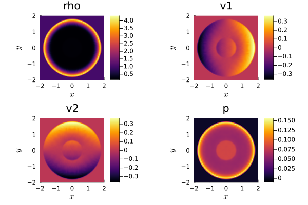

6: Subcell limiting with the IDP Limiter


In the previous tutorial, the element-wise limiting with IndicatorHennemannGassner and VolumeIntegralShockCapturingHG was explained. This tutorial contains a short introduction to the idea and implementation of subcell shock capturing approaches in Trixi.jl, which is also based on the DGSEM scheme in flux differencing formulation. Trixi.jl contains the a-posteriori invariant domain-preserving (IDP) limiter which was introduced by Pazner (2020) and Rueda-Ramírez, Pazner, Gassner (2022). It is a flux-corrected transport-type (FCT) limiter and is implemented using SubcellLimiterIDP and VolumeIntegralSubcellLimiting. Since it is an a-posteriori limiter you have to apply a correction stage after each Runge-Kutta stage. This is done by passing the stage callback SubcellLimiterIDPCorrection to the time integration method.
Time integration method
As mentioned before, the IDP limiting is an a-posteriori limiter. Its limiting process guarantees the target bounds for an explicit (forward) Euler time step. To still achieve a high-order approximation, the implementation uses strong-stability preserving (SSP) Runge-Kutta methods, which can be written as convex combinations of forward Euler steps. As such, they preserve the convexity of convex functions and functionals, such as the TVD semi-norm and the maximum principle in 1D, for instance.
Since IDP/FCT limiting procedure operates on independent forward Euler steps, its a-posteriori correction stage is implemented as a stage callback that is triggered after each forward Euler step in an SSP Runge-Kutta method. Unfortunately, the solve(...) routines in OrdinaryDiffEq.jl, typically employed for time integration in Trixi.jl, do not support this type of stage callback.
Therefore, subcell limiting with the IDP limiter requires the use of a Trixi-intern time integration SSPRK method called with
Trixi.solve(ode, method(stage_callbacks = stage_callbacks); ...);Right now, only the canonical three-stage, third-order SSPRK method (Shu-Osher) Trixi.SimpleSSPRK33 is implemented.
IDP Limiting
The implementation of the invariant domain preserving (IDP) limiting approach (SubcellLimiterIDP) is based on Pazner (2020) and Rueda-Ramírez, Pazner, Gassner (2022). It supports several types of limiting which are enabled by passing parameters individually.
Global bounds
If enabled, the global bounds enforce physical admissibility conditions, such as non-negativity of variables. This can be done for conservative variables, where the limiter is of a one-sided Zalesak-type (Zalesak, 1979), and general non-linear variables, where a Newton-bisection algorithm is used to enforce the bounds.
The Newton-bisection algorithm is an iterative method and requires some parameters. It uses a fixed maximum number of iteration steps (max_iterations_newton = 10) and relative/absolute tolerances (newton_tolerances = (1.0e-12, 1.0e-14)). The given values are sufficient in most cases and therefore used as default. If the implemented bounds checking functionality indicates problems with the limiting (see below) the Newton method with the chosen parameters might not manage to converge. If so, adapting the mentioned parameters helps fix that. Additionally, there is the parameter gamma_constant_newton, which can be used to scale the antidiffusive flux for the computation of the blending coefficients of nonlinear variables. The default value is 2 * ndims(equations), as it was shown by Pazner (2020) [Section 4.2.2.] that this value guarantees the fulfillment of bounds for a forward-Euler increment.
Very small non-negative values can be an issue as well. That's why we use an additional correction factor in the calculation of the global bounds,
\[u^{new} \geq \beta * u^{FV}.\]
By default, $\beta$ (named positivity_correction_factor) is set to 0.1 which works properly in most of the tested setups.
Conservative variables
The procedure to enforce global bounds for a conservative variables is as follows: If you want to guarantee non-negativity for the density of the compressible Euler equations, you pass the specific quantity name of the conservative variable.
using Trixiequations = CompressibleEulerEquations2D(1.4)┌──────────────────────────────────────────────────────────────────────────────────────────────────┐
│ CompressibleEulerEquations2D │
│ ════════════════════════════ │
│ #variables: ……………………………………………………………… 4 │
│ │ variable 1: ………………………………………………………… rho │
│ │ variable 2: ………………………………………………………… rho_v1 │
│ │ variable 3: ………………………………………………………… rho_v2 │
│ │ variable 4: ………………………………………………………… rho_e_total │
└──────────────────────────────────────────────────────────────────────────────────────────────────┘The quantity name of the density is rho which is how we enable its limiting.
positivity_variables_cons = ["rho"]1-element Vector{String}:
"rho"The quantity names are passed as a vector to allow several quantities. This is used, for instance, if you want to limit the density of two different components using the multicomponent compressible Euler equations.
equations = CompressibleEulerMulticomponentEquations2D(gammas = (1.4, 1.648), gas_constants = (0.287, 1.578))┌──────────────────────────────────────────────────────────────────────────────────────────────────┐
│ CompressibleEulerMulticomponentEquations2D │
│ ══════════════════════════════════════════ │
│ #variables: ……………………………………………………………… 5 │
│ │ variable 1: ………………………………………………………… rho_v1 │
│ │ variable 2: ………………………………………………………… rho_v2 │
│ │ variable 3: ………………………………………………………… rho_e_total │
│ │ variable 4: ………………………………………………………… rho1 │
│ │ variable 5: ………………………………………………………… rho2 │
└──────────────────────────────────────────────────────────────────────────────────────────────────┘Then, we just pass both quantity names.
positivity_variables_cons = ["rho1", "rho2"]2-element Vector{String}:
"rho1"
"rho2"Alternatively, it is possible to all limit all density variables with a general command using
positivity_variables_cons = ["rho" * string(i) for i in eachcomponent(equations)]2-element Vector{String}:
"rho1"
"rho2"Non-linear variables
To allow limitation for all possible non-linear variables, including variables defined on-the-fly, you can directly pass the function that computes the quantity for which you want to enforce positivity. For instance, if you want to enforce non-negativity for the pressure, do as follows.
positivity_variables_nonlinear = [pressure]1-element Vector{typeof(pressure)}:
pressure (generic function with 24 methods)Local bounds
Second, Trixi.jl supports the limiting with local bounds for conservative variables using a two-sided Zalesak-type limiter (Zalesak, 1979) and for general non-linear variables using a one-sided Newton-bisection algorithm. They allow to avoid spurious oscillations within the global bounds and to improve the shock-capturing capabilities of the method. The corresponding numerical admissibility conditions are frequently formulated as local maximum or minimum principles. The local bounds are computed using the maximum and minimum values of all local neighboring nodes. Within this calculation we use the low-order FV solution values for each node.
As for the limiting with global bounds you are passing the quantity names of the conservative variables you want to limit. So, to limit the density with lower and upper local bounds pass the following.
local_twosided_variables_cons = ["rho"]1-element Vector{String}:
"rho"To limit non-linear variables locally, pass the variable function combined with the requested bound (min or max) as a tuple. For instance, to impose a lower local bound on the modified specific entropy entropy_guermond_etal, use
local_onesided_variables_nonlinear = [(entropy_guermond_etal, min)]1-element Vector{Tuple{typeof(entropy_guermond_etal), typeof(min)}}:
(Trixi.entropy_guermond_etal, min)Exemplary simulation
How to set up a simulation using the IDP limiting becomes clearer when looking at an exemplary setup. This will be a simplified version of tree_2d_dgsem/elixir_euler_blast_wave_sc_subcell.jl. Since the setup is mostly very similar to a pure DGSEM setup as in tree_2d_dgsem/elixir_euler_blast_wave.jl, the equivalent parts are used without any explanation here.
using Trixiequations = CompressibleEulerEquations2D(1.4)function initial_condition_blast_wave(x, t, equations::CompressibleEulerEquations2D) # Modified From Hennemann & Gassner JCP paper 2020 (Sec. 6.3) -> "medium blast wave" # Set up polar coordinates inicenter = SVector(0.0, 0.0) x_norm = x[1] - inicenter[1] y_norm = x[2] - inicenter[2] r = sqrt(x_norm^2 + y_norm^2) phi = atan(y_norm, x_norm) sin_phi, cos_phi = sincos(phi) # Calculate primitive variables rho = r > 0.5 ? 1.0 : 1.1691 v1 = r > 0.5 ? 0.0 : 0.1882 * cos_phi v2 = r > 0.5 ? 0.0 : 0.1882 * sin_phi p = r > 0.5 ? 1.0E-3 : 1.245 return prim2cons(SVector(rho, v1, v2, p), equations)endinitial_condition = initial_condition_blast_wave;Since the surface integral is equal for both the DG and the subcell FV method, the limiting is applied only in the volume integral.
Note, that the DG method is based on the flux differencing formulation. Hence, you have to use a two-point flux, such as flux_ranocha, flux_shima_etal, flux_chandrashekar or flux_kennedy_gruber, for the DG volume flux.
surface_flux = flux_lax_friedrichsvolume_flux = flux_ranochaflux_ranocha (generic function with 9 methods)The limiter is implemented within SubcellLimiterIDP. It always requires the parameters equations and basis. With additional parameters (described above or listed in the docstring) you can specify and enable additional limiting options. Here, the simulation should contain local limiting for the density using lower and upper bounds.
basis = LobattoLegendreBasis(3)limiter_idp = SubcellLimiterIDP(equations, basis; local_twosided_variables_cons = ["rho"])┌──────────────────────────────────────────────────────────────────────────────────────────────────┐
│ SubcellLimiterIDP │
│ ═════════════════ │
│ Limiter: ……………………………………………………………………… │
│ : ………………………………………………………………………………………… Local two-sided limiting for conservative variables [1] │
│ Local bounds: ………………………………………………………… FV solution │
└──────────────────────────────────────────────────────────────────────────────────────────────────┘The initialized limiter is passed to VolumeIntegralSubcellLimiting in addition to the volume fluxes of the low-order and high-order scheme.
volume_integral = VolumeIntegralSubcellLimiting(limiter_idp; volume_flux_dg = volume_flux, volume_flux_fv = surface_flux)┌──────────────────────────────────────────────────────────────────────────────────────────────────┐
│ VolumeIntegralSubcellLimiting │
│ ═════════════════════════════ │
│ volume integral low order: ……………………… VolumeIntegralPureLGLFiniteVolume │
│ │ FV flux: ………………………………………………………………… FluxLaxFriedrichs(max_abs_speed) │
│ volume flux DG: …………………………………………………… flux_ranocha │
│ limiter: ……………………………………………………………………… SubcellLimiterIDP │
│ │ Limiter: ………………………………………………………………… │
│ │ : …………………………………………………………………………………… Local two-sided limiting for conservative variables [1] │
│ │ Local bounds: …………………………………………………… FV solution │
└──────────────────────────────────────────────────────────────────────────────────────────────────┘Alternatively, you can also pass a pre-defined low-order volume integral to the subcell limiting volume integral:
volume_integral_low_order = VolumeIntegralPureLGLFiniteVolume(surface_flux)volume_integral = VolumeIntegralSubcellLimiting(limiter_idp; volume_flux_dg = volume_flux, volume_integral_low_order = volume_integral_low_order)┌──────────────────────────────────────────────────────────────────────────────────────────────────┐
│ VolumeIntegralSubcellLimiting │
│ ═════════════════════════════ │
│ volume integral low order: ……………………… VolumeIntegralPureLGLFiniteVolume │
│ │ FV flux: ………………………………………………………………… FluxLaxFriedrichs(max_abs_speed) │
│ volume flux DG: …………………………………………………… flux_ranocha │
│ limiter: ……………………………………………………………………… SubcellLimiterIDP │
│ │ Limiter: ………………………………………………………………… │
│ │ : …………………………………………………………………………………… Local two-sided limiting for conservative variables [1] │
│ │ Local bounds: …………………………………………………… FV solution │
└──────────────────────────────────────────────────────────────────────────────────────────────────┘This also allows to use a second-order FV scheme with
volume_integral_low_order = VolumeIntegralPureLGLFiniteVolumeO2(basis; reconstruction_mode = reconstruction_O2_inner, volume_flux_fv = surface_flux)Then, the volume integral is passed to solver as it is done for the standard flux-differencing DG scheme or the element-wise limiting.
solver = DGSEM(basis, surface_flux, volume_integral)┌──────────────────────────────────────────────────────────────────────────────────────────────────┐
│ DG{Float64} │
│ ═══════════ │
│ basis: …………………………………………………………………………… LobattoLegendreBasis{Float64}(polydeg=3) │
│ mortar: ………………………………………………………………………… LobattoLegendreMortarL2{Float64}(polydeg=3) │
│ surface integral: ……………………………………………… SurfaceIntegralWeakForm │
│ │ surface flux: …………………………………………………… FluxLaxFriedrichs(max_abs_speed) │
│ volume integral: ………………………………………………… VolumeIntegralSubcellLimiting │
│ │ volume integral low order: ………………… VolumeIntegralPureLGLFiniteVolume │
│ │ │ FV flux: …………………………………………………………… FluxLaxFriedrichs(max_abs_speed) │
│ │ volume flux DG: ……………………………………………… flux_ranocha │
│ │ limiter: ………………………………………………………………… SubcellLimiterIDP │
│ │ │ Limiter: …………………………………………………………… │
│ │ │ : ……………………………………………………………………………… Local two-sided limiting for conservative variables [1] │
│ │ │ Local bounds: ……………………………………………… FV solution │
└──────────────────────────────────────────────────────────────────────────────────────────────────┘coordinates_min = (-2.0, -2.0)coordinates_max = (2.0, 2.0)mesh = TreeMesh(coordinates_min, coordinates_max, initial_refinement_level = 5, periodicity = true)semi = SemidiscretizationHyperbolic(mesh, equations, initial_condition, solver; boundary_conditions = boundary_condition_periodic)tspan = (0.0, 2.0)ode = semidiscretize(semi, tspan)summary_callback = SummaryCallback()analysis_interval = 1000analysis_callback = AnalysisCallback(semi, interval = analysis_interval)alive_callback = AliveCallback(analysis_interval = analysis_interval)save_solution = SaveSolutionCallback(interval = 1000, save_initial_solution = true, save_final_solution = true, solution_variables = cons2prim, extra_node_variables = (:limiting_coefficient,))stepsize_callback = StepsizeCallback(cfl = 0.3)callbacks = CallbackSet(summary_callback, analysis_callback, alive_callback, save_solution, stepsize_callback);As explained above, the IDP limiter works a-posteriori and requires the additional use of a correction stage implemented with the stage callback SubcellLimiterIDPCorrection. This callback is passed within a tuple to the time integration method.
stage_callbacks = (SubcellLimiterIDPCorrection(),)(SubcellLimiterIDPCorrection(),)Moreover, as mentioned before as well, simulations with subcell limiting require a Trixi-intern SSPRK time integration methods with passed stage callbacks and a Trixi-intern Trixi.solve(...) routine.
sol = Trixi.solve(ode, Trixi.SimpleSSPRK33(stage_callbacks = stage_callbacks); dt = 1, # solve needs some value here but it will be overwritten by the stepsize_callback callback = callbacks);
████████╗██████╗ ██╗██╗ ██╗██╗
╚══██╔══╝██╔══██╗██║╚██╗██╔╝██║
██║ ██████╔╝██║ ╚███╔╝ ██║
██║ ██╔══██╗██║ ██╔██╗ ██║
██║ ██║ ██║██║██╔╝ ██╗██║
╚═╝ ╚═╝ ╚═╝╚═╝╚═╝ ╚═╝╚═╝
┌──────────────────────────────────────────────────────────────────────────────────────────────────┐
│ SemidiscretizationHyperbolic │
│ ════════════════════════════ │
│ #spatial dimensions: ……………………………………… 2 │
│ mesh: ……………………………………………………………………………… TreeMesh{2, Trixi.SerialTree{2, Float64}} with length 1365 │
│ equations: ………………………………………………………………… CompressibleEulerEquations2D │
│ initial condition: …………………………………………… initial_condition_blast_wave │
│ boundary conditions: ……………………………………… Trixi.BoundaryConditionPeriodic │
│ source terms: ………………………………………………………… nothing │
│ solver: ………………………………………………………………………… DG │
│ total #DOFs per field: ………………………………… 16384 │
└──────────────────────────────────────────────────────────────────────────────────────────────────┘
┌──────────────────────────────────────────────────────────────────────────────────────────────────┐
│ TreeMesh{2, Trixi.SerialTree{2, Float64}} │
│ ═════════════════════════════════════════ │
│ center: ………………………………………………………………………… [0.0, 0.0] │
│ length: ………………………………………………………………………… 4.0 │
│ periodicity: …………………………………………………………… (true, true) │
│ current #cells: …………………………………………………… 1365 │
│ #leaf-cells: …………………………………………………………… 1024 │
│ current capacity: ……………………………………………… 1365 │
└──────────────────────────────────────────────────────────────────────────────────────────────────┘
┌──────────────────────────────────────────────────────────────────────────────────────────────────┐
│ CompressibleEulerEquations2D │
│ ════════════════════════════ │
│ #variables: ……………………………………………………………… 4 │
│ │ variable 1: ………………………………………………………… rho │
│ │ variable 2: ………………………………………………………… rho_v1 │
│ │ variable 3: ………………………………………………………… rho_v2 │
│ │ variable 4: ………………………………………………………… rho_e_total │
└──────────────────────────────────────────────────────────────────────────────────────────────────┘
┌──────────────────────────────────────────────────────────────────────────────────────────────────┐
│ DG{Float64} │
│ ═══════════ │
│ basis: …………………………………………………………………………… LobattoLegendreBasis{Float64}(polydeg=3) │
│ mortar: ………………………………………………………………………… LobattoLegendreMortarL2{Float64}(polydeg=3) │
│ surface integral: ……………………………………………… SurfaceIntegralWeakForm │
│ │ surface flux: …………………………………………………… FluxLaxFriedrichs(max_abs_speed) │
│ volume integral: ………………………………………………… VolumeIntegralSubcellLimiting │
│ │ volume integral low order: ………………… VolumeIntegralPureLGLFiniteVolume │
│ │ │ FV flux: …………………………………………………………… FluxLaxFriedrichs(max_abs_speed) │
│ │ volume flux DG: ……………………………………………… flux_ranocha │
│ │ limiter: ………………………………………………………………… SubcellLimiterIDP │
│ │ │ Limiter: …………………………………………………………… │
│ │ │ : ……………………………………………………………………………… Local two-sided limiting for conservative variables [1] │
│ │ │ Local bounds: ……………………………………………… FV solution │
└──────────────────────────────────────────────────────────────────────────────────────────────────┘
┌──────────────────────────────────────────────────────────────────────────────────────────────────┐
│ AnalysisCallback │
│ ════════════════ │
│ interval: …………………………………………………………………… 1000 │
│ analyzer: …………………………………………………………………… LobattoLegendreAnalyzer{Float64}(polydeg=6) │
│ │ error 1: ………………………………………………………………… l2_error │
│ │ error 2: ………………………………………………………………… linf_error │
│ │ integral 1: ………………………………………………………… entropy_timederivative │
│ save analysis to file: ………………………………… no │
└──────────────────────────────────────────────────────────────────────────────────────────────────┘
┌──────────────────────────────────────────────────────────────────────────────────────────────────┐
│ AliveCallback │
│ ═════════════ │
│ interval: …………………………………………………………………… 100 │
└──────────────────────────────────────────────────────────────────────────────────────────────────┘
┌──────────────────────────────────────────────────────────────────────────────────────────────────┐
│ SaveSolutionCallback │
│ ════════════════════ │
│ interval: …………………………………………………………………… 1000 │
│ solution variables: ………………………………………… cons2prim │
│ save initial solution: ………………………………… yes │
│ save final solution: ……………………………………… yes │
│ output directory: ……………………………………………… /home/runner/work/Trixi.jl/Tr…i.jl/docs/build/tutorials/out │
└──────────────────────────────────────────────────────────────────────────────────────────────────┘
┌──────────────────────────────────────────────────────────────────────────────────────────────────┐
│ StepsizeCallback │
│ ════════════════ │
│ CFL Hyperbolic: …………………………………………………… Returns{Float64}(0.3) │
│ CFL Parabolic: ……………………………………………………… Returns{Float64}(0.0) │
│ Interval: …………………………………………………………………… 1 │
└──────────────────────────────────────────────────────────────────────────────────────────────────┘
┌──────────────────────────────────────────────────────────────────────────────────────────────────┐
│ Time integration │
│ ════════════════ │
│ Start time: ……………………………………………………………… 0.0 │
│ Final time: ……………………………………………………………… 2.0 │
│ time integrator: ………………………………………………… SimpleSSPRK33 │
│ adaptive: …………………………………………………………………… false │
└──────────────────────────────────────────────────────────────────────────────────────────────────┘
┌──────────────────────────────────────────────────────────────────────────────────────────────────┐
│ Environment information │
│ ═══════════════════════ │
│ #threads: …………………………………………………………………… 1 │
│ threading backend: …………………………………………… polyester │
└──────────────────────────────────────────────────────────────────────────────────────────────────┘
────────────────────────────────────────────────────────────────────────────────────────────────────
Simulation running 'CompressibleEulerEquations2D' with DGSEM(polydeg=3)
────────────────────────────────────────────────────────────────────────────────────────────────────
#timesteps: 0 run time: 6.41000000e-07 s
Δt: 1.00000000e+00 └── GC time: 0.00000000e+00 s (0.000%)
sim. time: 0.00000000e+00 (0.000%) time/DOF/RHS: NaN s
PID: Inf s
#DOFs per field: 16384 alloc'd memory: 2420.751 MiB
#elements: 1024 device memory: 0.000 MiB
Variable: rho rho_v1 rho_v2 rho_e_total
L2 error: 6.25621384e-03 5.88786362e-03 5.81457821e-03 1.15827059e-01
Linf error: 1.06470791e-01 2.46283676e-01 1.37585923e-01 1.97119199e+00
∑∂S/∂U ⋅ Uₜ : -6.22526192e+02
────────────────────────────────────────────────────────────────────────────────────────────────────
#timesteps: 100 │ Δt: 2.8994e-03 │ sim. time: 2.9348e-01 (14.674%) │ run time: 1.7653e+00 s
#timesteps: 200 │ Δt: 3.2422e-03 │ sim. time: 6.0015e-01 (30.008%) │ run time: 2.8504e+00 s
#timesteps: 300 │ Δt: 3.8214e-03 │ sim. time: 9.5440e-01 (47.720%) │ run time: 4.0004e+00 s
#timesteps: 400 │ Δt: 4.3987e-03 │ sim. time: 1.3655e+00 (68.276%) │ run time: 5.1365e+00 s
#timesteps: 500 │ Δt: 5.0255e-03 │ sim. time: 1.8368e+00 (91.842%) │ run time: 6.2796e+00 s
────────────────────────────────────────────────────────────────────────────────────────────────────
Simulation running 'CompressibleEulerEquations2D' with DGSEM(polydeg=3)
────────────────────────────────────────────────────────────────────────────────────────────────────
#timesteps: 533 run time: 6.66690538e+00 s
Δt: 2.09497350e-04 └── GC time: 0.00000000e+00 s (0.000%)
sim. time: 2.00000000e+00 (100.000%) time/DOF/RHS: 1.82597108e-07 s
PID: 2.54249576e-07 s
#DOFs per field: 16384 alloc'd memory: 2436.915 MiB
#elements: 1024 device memory: 0.000 MiB
Variable: rho rho_v1 rho_v2 rho_e_total
L2 error: 1.01060025e+00 3.05293876e-01 3.05273793e-01 6.85740275e-01
Linf error: 3.33723098e+00 1.49348419e+00 1.49329549e+00 2.92893716e+00
∑∂S/∂U ⋅ Uₜ : -2.96724149e+01
────────────────────────────────────────────────────────────────────────────────────────────────────
────────────────────────────────────────────────────────────────────────────────────────────────────
Trixi.jl simulation finished. Final time: 2.0 Time steps: 533 (accepted), 533 (total)
────────────────────────────────────────────────────────────────────────────────────────────────────
Trixi.jl
────────────────────────────────────────────────────────────────────────────────────────────
Time Allocations
────────────────────── ────────────────────────
Tot / % measured: 6.68s / 100.0% 23.6MiB / 100.0%
────────────────────────────────────── ────────────────────── ────────────────────────
Section ncalls time %tot avg alloc %tot avg
────────────────────────────────────────────────────────────────────────────────────────────
main loop 1 5.97s 89.5% 5.97s 8.67MiB 36.7% 8.67MiB
├─ rhs_hyperbolic! 1.60k 4.78s 71.7% 2.99ms 4.05KiB 0.0% 2.59B
│ ├─ volume integral 1.60k 4.23s 63.4% 2.65ms ∅ ∅ ∅
│ ├─ interface flux 1.60k 285ms 4.3% 178μs ∅ ∅ ∅
│ ├─ prolong2interfaces 1.60k 125ms 1.9% 78.0μs ∅ ∅ ∅
│ ├─ surface integral 1.60k 102ms 1.5% 63.8μs ∅ ∅ ∅
│ ├─ Jacobian 1.60k 19.2ms 0.3% 12.0μs ∅ ∅ ∅
│ ├─ reset ∂u/∂t 1.60k 19.0ms 0.3% 11.9μs ∅ ∅ ∅
│ ├─ ~rhs_hyperbolic!~ 1.60k 3.33ms 0.0% 2.08μs 4.05KiB 0.0% 2.59B
│ ├─ prolong2boundaries 1.60k 173μs 0.0% 108ns ∅ ∅ ∅
│ ├─ prolong2mortars 1.60k 157μs 0.0% 98.4ns ∅ ∅ ∅
│ ├─ mortar flux 1.60k 80.4μs 0.0% 50.3ns ∅ ∅ ∅
│ ├─ boundary flux 1.60k 46.9μs 0.0% 29.3ns ∅ ∅ ∅
│ └─ source terms 1.60k 46.2μs 0.0% 28.9ns ∅ ∅ ∅
├─ a posteriori limiter 1.60k 1.04s 15.6% 651μs 213KiB 0.9% 136B
│ ├─ blending factors 1.60k 664ms 9.9% 415μs 213KiB 0.9% 136B
│ │ ├─ local twosided 1.60k 659ms 9.9% 412μs 212KiB 0.9% 136B
│ │ ├─ reset alpha 1.60k 4.78ms 0.1% 2.99μs ∅ ∅ ∅
│ │ └─ ~blending factors~ 1.60k 584μs 0.0% 365ns 432B 0.0% 0.27B
│ └─ ~a posteriori limiter~ 1.60k 378ms 5.7% 236μs 256B 0.0% 0.16B
├─ ~main loop~ 1 84.2ms 1.3% 84.2ms 608B 0.0% 608B
└─ Step-Callbacks 533 63.6ms 1.0% 119μs 8.45MiB 35.8% 16.2KiB
├─ calculate dt 533 54.5ms 0.8% 102μs ∅ ∅ ∅
├─ analyze solution 1 6.44ms 0.1% 6.44ms 4.64MiB 19.6% 4.64MiB
├─ I/O 1 1.62ms 0.0% 1.62ms 1.51MiB 6.4% 1.51MiB
│ ├─ save solution 1 1.61ms 0.0% 1.61ms 1.51MiB 6.4% 1.51MiB
│ ├─ ~I/O~ 1 4.30μs 0.0% 4.30μs 1.31KiB 0.0% 1.31KiB
│ ├─ get node variables 1 4.05μs 0.0% 4.05μs ∅ ∅ ∅
│ ├─ get element variables 1 220ns 0.0% 220ns ∅ ∅ ∅
│ └─ save mesh 1 70.0ns 0.0% 70.0ns ∅ ∅ ∅
└─ ~Step-Callbacks~ 533 1.04ms 0.0% 1.96μs 2.30MiB 9.7% 4.42KiB
I/O 2 696ms 10.4% 348ms 10.2MiB 43.2% 5.10MiB
├─ ~I/O~ 2 637ms 9.5% 319ms 6.79MiB 28.7% 3.39MiB
├─ save solution 1 58.6ms 0.9% 58.6ms 3.41MiB 14.5% 3.41MiB
├─ get node variables 1 5.90μs 0.0% 5.90μs ∅ ∅ ∅
├─ get element variables 1 802ns 0.0% 802ns ∅ ∅ ∅
└─ save mesh 1 100ns 0.0% 100ns ∅ ∅ ∅
analyze solution 1 6.07ms 0.1% 6.07ms 4.76MiB 20.1% 4.76MiB
calculate dt 1 105μs 0.0% 105μs ∅ ∅ ∅
────────────────────────────────────────────────────────────────────────────────────────────Visualization
As for a standard simulation in Trixi.jl, it is possible to visualize the solution using the plot routine from Plots.jl.
using Plotsplot(sol)
To get an additional look at the amount of limiting that is used, you can use the visualization approach using the SaveSolutionCallback by passing (:limiting_coefficient,) as extra_node_variables, Trixi2Vtk and ParaView. More details about this procedure can be found in the visualization documentation.
With that implementation and the standard procedure used for Trixi2Vtk you get the following dropdown menu in ParaView.
The resulting visualization of the density and the limiting parameter then looks like this.
You can see that the limiting coefficient does not lie in the interval [0,1] because Trixi2Vtk interpolates all quantities to regular nodes by default. You can disable this functionality with reinterpolate=false within the call of trixi2vtk(...) and get the following visualization.
Bounds checking
Subcell limiting is based on the fulfillment of target bounds - either global or local. Although the implementation works and has been thoroughly tested, there are some cases where these bounds are not met. For instance, the deviations could be in machine precision, which is not problematic. Larger deviations can be cause by too large time-step sizes (which can be easily fixed by reducing the CFL number), specific boundary conditions or source terms. Insufficient parameters for the Newton-bisection algorithm can also be a reason when limiting non-linear variables. There are described above.
In many cases, it is reasonable to monitor the bounds deviations. Because of that, Trixi.jl supports a bounds checking routine implemented using the stage callback BoundsCheckCallback. It checks all target bounds for fulfillment in every RK stage. If added to the tuple of stage callbacks like
stage_callbacks = (SubcellLimiterIDPCorrection(), BoundsCheckCallback())and passed to the time integration method, a summary is added to the final console output. For the given example, this summary shows that all bounds are met at all times.
────────────────────────────────────────────────────────────────────────────────────────────────────
Maximum deviation from bounds:
────────────────────────────────────────────────────────────────────────────────────────────────────
rho:
- lower bound: 0.0
- upper bound: 0.0
────────────────────────────────────────────────────────────────────────────────────────────────────Moreover, it is also possible to monitor the bounds deviations incurred during the simulations. To do that use the parameter save_errors = true, such that the instant deviations are written to deviations.txt in output_directory every interval time steps.
BoundsCheckCallback(save_errors = true, output_directory = "out", interval = 100)Then, for the given example the deviations file contains all daviations for the current timestep and simulation time.
iter, simu_time, rho_min, rho_max
100, 0.29103427131404924, 0.0, 0.0
200, 0.5980281923063808, 0.0, 0.0
300, 0.9520853560765293, 0.0, 0.0
400, 1.3630295622683186, 0.0, 0.0
500, 1.8344999624013498, 0.0, 0.0
532, 1.9974179806990118, 0.0, 0.0This page was generated using Literate.jl.